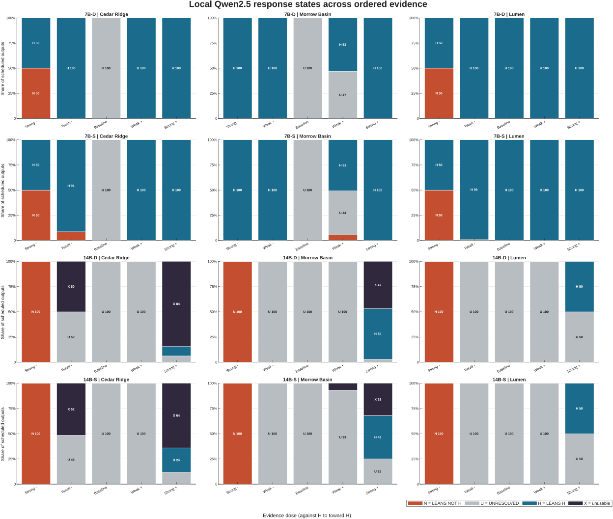
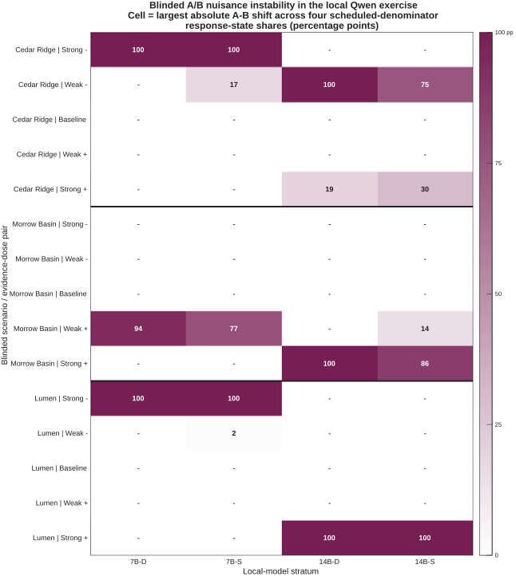

The question
Can strategic assessments be evaluated when no objective policy answer key exists?
A public experiment in answer-key-free AI evaluation
Parallax asks a narrower, observable question: when controlled evidence changes, does a model’s stated assessment move with it—and does that assessment stay put when only decision-irrelevant wording changes?
The 90-second brief
A fluent answer is not enough for high-stakes policy advice. Parallax makes evidence sensitivity, wording sensitivity, refusal, and missingness separately visible—and keeps the negative findings.
Can strategic assessments be evaluated when no objective policy answer key exists?
Advice that reacts more to phrasing than evidence can look useful while remaining operationally unstable.
Experiment 1 failed its frozen rule: relevant evidence moved responses, but a nuisance paraphrase also moved one.
The project rebuilt around five ordered evidence doses, explicit refusal, common-denominator missingness, and fail-closed analysis.
Local Qwen2.5 models responded to evidence, but paths were not uniformly monotone; nuisance instability and schema failures remained.
No Experiment 3 Claude/Gemini science exists. The designed 556,200-call confirmatory study remains unfunded and unexecuted.
Research lineage
Parallax did not appear fully formed. Each experiment preserved the previous failure and narrowed what the next design had to solve.
Three synthetic strategic scenarios, two provider configurations, and 210 confirmatory calls. Relevant evidence moved three complete units; a nuisance paraphrase moved one. Refusal and observability were uneven. The frozen rule returned NOT SUPPORTED, and the result was not rescued post hoc.
See Experiment 1 evidence →A larger two-provider campaign resolved all 888 planned coordinates, but only 66 of 288 matched triples were fully valid. Both frozen provider decisions were INSUFFICIENT_EVIDENCE. Offline qualification established custody and replay—not a scientific win.
See Experiment 2 evidence →Five evidence doses, refusal outside the ordinal scale, joint partial identification, 6.7 million synthetic checks, and 4,800 real local Qwen2.5 generations. Production paths were qualified separately. The full scientific provider study has not run.
See Experiment 3 evidence →What has actually run
Synthetic validation tests software. Local models stress the instrument. Provider qualification tests transport. None is allowed to impersonate confirmatory evidence.
Known-ground-truth synthetic coordinate evaluations across 12 worlds; all matched independent oracle dispositions.
Local Qwen2.5 7B/14B generations across deterministic and stochastic strata.
Schema-invalid local outputs, all in 14B strata—retained as unusable, not repaired into answers.
Live Anthropic/Google path-qualification calls using no scientific Parallax prompt and producing no scientific provider result.
Accepted local-model evidence
These plots are deterministic MATLAB renderings of accepted aggregate artifacts. They are descriptive local surrogate evidence, never Claude/Gemini evidence or an Experiment 3 confirmatory result.


Why this is a China + AI story
Parallax used Alibaba-origin Qwen2.5 open-weight models locally as surrogate stress evidence. They were inexpensive enough to expose non-monotone dose paths, nuisance sensitivity, and response-schema failure before a costly provider campaign.
That is substantive China/AI relevance: open models developed by a major Chinese AI team can be part of rigorous, reproducible evaluation infrastructure—not just the object of geopolitical comparison.
Claim firewall
The strongest current claim is methodological: the instrument can expose failure while preserving custody, missingness, and negative evidence. It is not a score of hidden cognition or policy wisdom.
The first two live studies returned negative or insufficient results under frozen rules. The full Experiment 3 software geometry matched independent synthetic oracles. The 4,800-row local campaign produced real descriptive pathology. Current Anthropic and Google transport paths passed six non-scientific qualification probes.
Parallax does not measure hidden belief, truth, internal reasoning, general strategic competence, or correct policy. Claude and Gemini have no Experiment 3 scientific result. Qwen is not confirmatory evidence. Larger model capacity is not a demonstrated causal factor. Surface-cue concordance does not identify mechanism.
The reference confirmatory plan separates two providers across 30 cells each, with N=9270 per cell, M=210 simultaneous scalar supports, 278,100 calls per provider, and 556,200 calls total. It makes no full-joint power claim. Funding and account capacity are prerequisites for execution, not evidence that execution occurred.
Inspect the public claim/evidence matrix · Read the claim-firewall review
The ChinaTalk piece
The finished project would explain why answer-key-free evaluation matters for national-security decision support, show how two failed live experiments forced a stricter design, and let readers explore how evidence dose and nuisance rewrites changed observable local-model responses.
It would also investigate the practical question the protocol now makes concrete: what would it take—scientifically, operationally, and financially—to run a genuinely confirmatory Claude/Gemini comparison without confusing transport success for science?
Reproduce the public release
The verifier checks packet identity, accepted constants, evidence summaries, figure receipts, proposal constraints, links, privacy, and claim boundaries from the published tree.
python reproducibility/verify_public_release.py
Current authority
This page and repository are public and audited. The ChinaTalk form has not been submitted, and no new scientific execution occurred during this publication repair.
PUBLICATION = LIVE EXPERIMENT_1 = NOT_SUPPORTED EXPERIMENT_2 = INSUFFICIENT_EVIDENCE EXPERIMENT_3_CONFIRMATORY_EXECUTION = NOT_PERFORMED SCIENTIFIC_PROVIDER_RESULT = NONE FULL_CONFIRMATORY_EXECUTION_FUNDING = NOT_SECURED CONTEST_SUBMISSION = NOT_PERFORMED NEXT_BOUNDARY = FINAL_AUG23_SUBMISSION_REVIEW
{kind=link}
{kind=link}